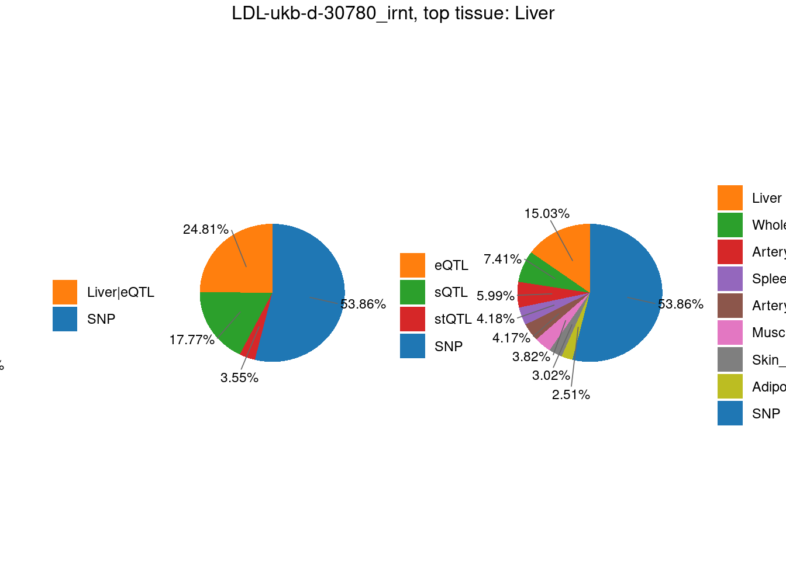
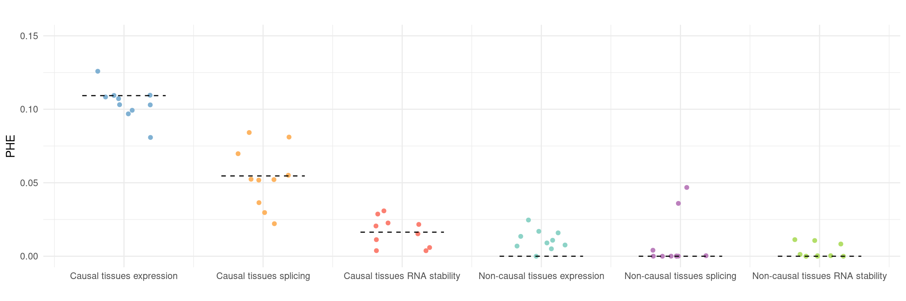
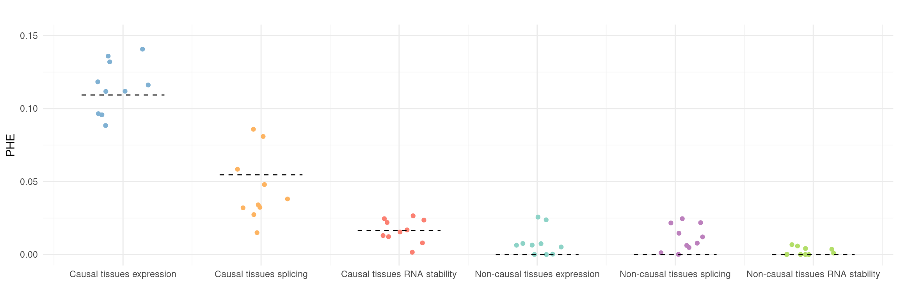
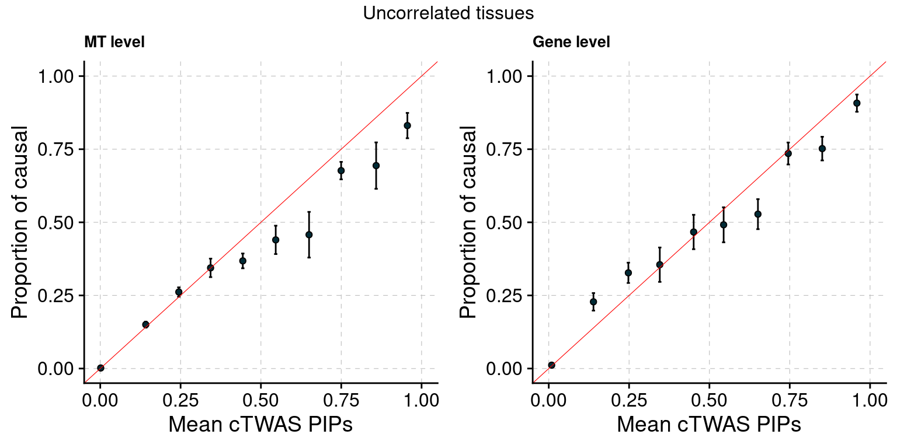

cTWAS paper figures
2025-8-18
Last updated: 2025-08-18
Checks: 6 1
Knit directory: multigroup_ctwas_analysis/
This reproducible R Markdown analysis was created with workflowr (version 1.7.0). The Checks tab describes the reproducibility checks that were applied when the results were created. The Past versions tab lists the development history.
The R Markdown file has unstaged changes. To know which version of the R Markdown file created these results, you’ll want to first commit it to the Git repo. If you’re still working on the analysis, you can ignore this warning. When you’re finished, you can run wflow_publish to commit the R Markdown file and build the HTML.
Great job! The global environment was empty. Objects defined in the global environment can affect the analysis in your R Markdown file in unknown ways. For reproduciblity it’s best to always run the code in an empty environment.
The command set.seed(20231112) was run prior to running the code in the R Markdown file. Setting a seed ensures that any results that rely on randomness, e.g. subsampling or permutations, are reproducible.
Great job! Recording the operating system, R version, and package versions is critical for reproducibility.
Nice! There were no cached chunks for this analysis, so you can be confident that you successfully produced the results during this run.
Great job! Using relative paths to the files within your workflowr project makes it easier to run your code on other machines.
Great! You are using Git for version control. Tracking code development and connecting the code version to the results is critical for reproducibility.
The results in this page were generated with repository version e41cab7. See the Past versions tab to see a history of the changes made to the R Markdown and HTML files.
Note that you need to be careful to ensure that all relevant files for the analysis have been committed to Git prior to generating the results (you can use wflow_publish or wflow_git_commit). workflowr only checks the R Markdown file, but you know if there are other scripts or data files that it depends on. Below is the status of the Git repository when the results were generated:
Unstaged changes:
Modified: analysis/ctwas_paper_figures.Rmd
Note that any generated files, e.g. HTML, png, CSS, etc., are not included in this status report because it is ok for generated content to have uncommitted changes.
These are the previous versions of the repository in which changes were made to the R Markdown (analysis/ctwas_paper_figures.Rmd) and HTML (docs/ctwas_paper_figures.html) files. If you’ve configured a remote Git repository (see ?wflow_git_remote), click on the hyperlinks in the table below to view the files as they were in that past version.
| File | Version | Author | Date | Message |
|---|---|---|---|---|
| Rmd | e41cab7 | sq-96 | 2025-08-19 | update |
| html | e41cab7 | sq-96 | 2025-08-19 | update |
| Rmd | bbd203f | sq-96 | 2025-08-19 | update |
| html | bbd203f | sq-96 | 2025-08-19 | update |
| Rmd | e248888 | sq-96 | 2025-08-19 | update |
| html | e248888 | sq-96 | 2025-08-19 | update |
| Rmd | ee48863 | sq-96 | 2025-08-18 | update |
| html | ee48863 | sq-96 | 2025-08-18 | update |
| Rmd | 6b7c3e2 | sq-96 | 2025-08-18 | update |
| html | 6b7c3e2 | sq-96 | 2025-08-18 | update |
| Rmd | f4bc224 | sq-96 | 2025-08-18 | update |
| html | f4bc224 | sq-96 | 2025-08-18 | update |
| Rmd | fd2ccbd | sq-96 | 2025-08-18 | update |
| html | fd2ccbd | sq-96 | 2025-08-18 | update |
| Rmd | d041eed | sq-96 | 2025-08-18 | update |
| html | d041eed | sq-96 | 2025-08-18 | update |
| Rmd | 3de1191 | sq-96 | 2025-08-18 | update |
| html | 3de1191 | sq-96 | 2025-08-18 | update |
Figure 2: cTWAS estimates genetic architecture of complex traits from GTEx
Figure 2c: Partition of h2g (Multiple tissues contribute and Contribution of each modality)

TableGrob (2 x 3) "arrange": 4 grobs
z cells name grob
1 1 (2-2,1-1) arrange gtable[layout]
2 2 (2-2,2-2) arrange gtable[layout]
3 3 (2-2,3-3) arrange gtable[layout]
4 4 (1-1,1-3) arrange text[GRID.text.157]Figure 2d: Percent of TWAS regions with Coloc signals

Figure 3: Multi-cTWAS improves the discovery of candidate genes
Figure 3a: Incorporating multiple modality and tissues improves discovery power

Figure 3b: M-cTWAS identified genes with higher POPS scores
Averaged POPS scores across all traits stratified by M-cTWAS PIPs 
| Version | Author | Date |
|---|---|---|
| ee48863 | sq-96 | 2025-08-18 |
Figure 3c: Comparison of number of signals per region between M-cTWAS, Coloc and TWAS
cTWAS tends to report single genes per locus, while coloc or TWAS report many. The number of signals of Coloc and TWAS are calcuated in regions with TWAS signals (after bonferroni correction). M-cTWAS signals are culated in regions selected by screen region step.
2025-08-18 20:01:34 INFO::Annotating susie alpha result...
2025-08-18 20:01:34 INFO::Map molecular traits to genes.
2025-08-18 20:01:38 INFO::Split PIPs for molecular traits mapped to multiple genes
2025-08-18 20:02:03 INFO::Compute combined PIPs...
| Version | Author | Date |
|---|---|---|
| ee48863 | sq-96 | 2025-08-18 |
Figure 3d: Compare with TGFM: compare with genes found in the paper. Show that unique genes by cTWAS are valid
For unique genes identified by M-cTWAS and TGFM, I plotted the distribution of POPS scores and showed that M-cTWAS unique genes have higher POPS score than TGFM unique genes. 
| Version | Author | Date |
|---|---|---|
| ee48863 | sq-96 | 2025-08-18 |
| Version | Author | Date |
|---|---|---|
| ee48863 | sq-96 | 2025-08-18 |
Figure 4: cTWAS discovers candidate genes for complex traits and provides insights on their molecular mechanisms


| Version | Author | Date |
|---|---|---|
| e41cab7 | sq-96 | 2025-08-19 |
Figure 5: Brain epiQTLs explain a large fraction of missing heritability by eQTLs
2025-08-18 20:03:25 INFO::Annotating fine-mapping result...
2025-08-18 20:03:25 INFO::Map molecular traits to genes
2025-08-18 20:03:34 INFO::Add gene positions
2025-08-18 20:03:34 INFO::Add SNP positions2025-08-18 20:03:52 INFO::Annotating fine-mapping result...
2025-08-18 20:03:52 INFO::Map molecular traits to genes
2025-08-18 20:03:56 INFO::Add gene positions
2025-08-18 20:03:56 INFO::Add SNP positions2025-08-18 20:04:05 INFO::Annotating susie alpha result...
2025-08-18 20:04:05 INFO::Map molecular traits to genes.
2025-08-18 20:04:06 INFO::Compute combined PIPs...2025-08-18 20:04:13 INFO::Annotating susie alpha result...
2025-08-18 20:04:13 INFO::Map molecular traits to genes.
2025-08-18 20:04:13 INFO::Compute combined PIPs...
| Version | Author | Date |
|---|---|---|
| e41cab7 | sq-96 | 2025-08-19 |
sessionInfo()R version 4.2.0 (2022-04-22)
Platform: x86_64-pc-linux-gnu (64-bit)
Running under: CentOS Linux 7 (Core)
Matrix products: default
BLAS/LAPACK: /software/openblas-0.3.13-el7-x86_64/lib/libopenblas_haswellp-r0.3.13.so
locale:
[1] LC_CTYPE=en_US.UTF-8 LC_NUMERIC=C
[3] LC_TIME=en_US.UTF-8 LC_COLLATE=en_US.UTF-8
[5] LC_MONETARY=en_US.UTF-8 LC_MESSAGES=en_US.UTF-8
[7] LC_PAPER=en_US.UTF-8 LC_NAME=C
[9] LC_ADDRESS=C LC_TELEPHONE=C
[11] LC_MEASUREMENT=en_US.UTF-8 LC_IDENTIFICATION=C
attached base packages:
[1] stats4 grid stats graphics grDevices utils datasets
[8] methods base
other attached packages:
[1] EnsDb.Hsapiens.v86_2.99.0 ensembldb_2.22.0
[3] AnnotationFilter_1.22.0 GenomicFeatures_1.50.4
[5] AnnotationDbi_1.60.2 Biobase_2.58.0
[7] GenomicRanges_1.50.2 GenomeInfoDb_1.34.9
[9] IRanges_2.32.0 S4Vectors_0.36.2
[11] BiocGenerics_0.44.0 grex_1.9
[13] patchwork_1.3.0 scales_1.3.0
[15] pheatmap_1.0.12 dplyr_1.1.4
[17] egg_0.4.5 gridExtra_2.3
[19] ggrepel_0.9.6 ggplot2_3.5.1
[21] data.table_1.16.0 ctwas_0.5.32
[23] workflowr_1.7.0
loaded via a namespace (and not attached):
[1] colorspace_2.1-1 rjson_0.2.23
[3] rprojroot_2.0.3 XVector_0.38.0
[5] locuszoomr_0.3.5 base64enc_0.1-3
[7] fs_1.6.4 rstudioapi_0.14
[9] farver_2.1.2 bit64_4.5.2
[11] fansi_1.0.6 xml2_1.3.3
[13] logging_0.10-108 codetools_0.2-18
[15] cachem_1.1.0 knitr_1.48
[17] jsonlite_1.8.9 Rsamtools_2.14.0
[19] dbplyr_2.5.0 png_0.1-7
[21] readr_2.1.5 compiler_4.2.0
[23] httr_1.4.7 Matrix_1.5-3
[25] fastmap_1.2.0 lazyeval_0.2.2
[27] cli_3.6.3 later_1.3.2
[29] htmltools_0.5.8.1 prettyunits_1.2.0
[31] tools_4.2.0 gtable_0.3.5
[33] glue_1.7.0 GenomeInfoDbData_1.2.9
[35] rappdirs_0.3.3 Rcpp_1.0.13
[37] jquerylib_0.1.4 vctrs_0.6.5
[39] Biostrings_2.66.0 rtracklayer_1.58.0
[41] xfun_0.47 stringr_1.5.1
[43] ps_1.7.1 irlba_2.3.5.1
[45] lifecycle_1.0.4 restfulr_0.0.15
[47] XML_3.99-0.14 zoo_1.8-12
[49] getPass_0.2-2 zlibbioc_1.44.0
[51] gggrid_0.2-0 hms_1.1.3
[53] promises_1.3.0 MatrixGenerics_1.10.0
[55] ProtGenerics_1.30.0 parallel_4.2.0
[57] SummarizedExperiment_1.28.0 RColorBrewer_1.1-3
[59] LDlinkR_1.4.0 yaml_2.3.10
[61] curl_5.2.3 memoise_2.0.1
[63] sass_0.4.9 biomaRt_2.54.1
[65] stringi_1.8.4 RSQLite_2.3.7
[67] highr_0.11 BiocIO_1.8.0
[69] filelock_1.0.3 BiocParallel_1.32.6
[71] repr_1.1.4 rlang_1.1.4
[73] pkgconfig_2.0.3 matrixStats_1.4.1
[75] bitops_1.0-8 evaluate_1.0.0
[77] lattice_0.20-45 purrr_1.0.2
[79] labeling_0.4.3 GenomicAlignments_1.34.1
[81] htmlwidgets_1.6.4 cowplot_1.1.3
[83] bit_4.5.0 processx_3.7.0
[85] tidyselect_1.2.1 magrittr_2.0.3
[87] AMR_2.1.1 R6_2.5.1
[89] generics_0.1.3 DelayedArray_0.24.0
[91] DBI_1.2.3 withr_3.0.1
[93] pgenlibr_0.3.7 pillar_1.9.0
[95] whisker_0.4 mixsqp_0.3-54
[97] KEGGREST_1.38.0 RCurl_1.98-1.16
[99] tibble_3.2.1 crayon_1.5.3
[101] utf8_1.2.4 BiocFileCache_2.6.1
[103] plotly_4.10.4 tzdb_0.4.0
[105] rmarkdown_2.28 progress_1.2.3
[107] blob_1.2.4 callr_3.7.2
[109] git2r_0.30.1 digest_0.6.37
[111] tidyr_1.3.1 httpuv_1.6.5
[113] munsell_0.5.1 viridisLite_0.4.2
[115] skimr_2.1.4 bslib_0.8.0